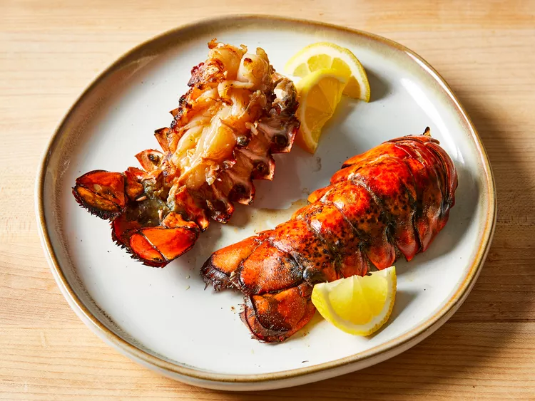

Grilled Lobster Tails

Ingredients
Original recipe (1X) yields 2 servings
- 1 tablespoon lemon juice
- 1/2 cup olive oil
- 1 teaspoon salt
- 1 teaspoon paprika
- 1/2 teaspoon garlic powder
- 2(10 ounce) rock lobster tails
Directions
- Gather all ingredients.
- Preheat the grill for high heat and lightly oil the grate.
- Pour lemon juice into a small bowl; slowly whisk in olive oil. Whisk in salt, paprika, white pepper, and garlic powder until combined.
- Split lobster tails lengthwise with a large knife, then brush flesh with some marinade.
- Place lobster tails flesh-side down on the preheated grill and cook, turning once and basting frequently with marinade, until opaque and firm to touch, 10 to 12 minutes. Discard any remaining marinade.